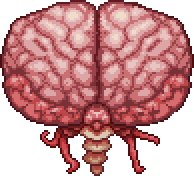
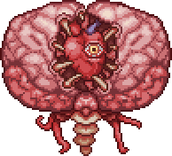

크툴루의 뇌는 진홍지대의 보스로, 하드모드 전에 싸우게 될 보스이다.
|  페이즈 1 |
 페이즈 2 |
||
| 클래식 | 전문가 | 마스터 | |
|---|---|---|---|
| 체력 | 1000 | 1700 | 2167 |
| 방어력 | 14 | ||
| 공격력 | 30 | 54 | 81 |
진홍지대의 진홍색 심장 3개를 망치로 부수거나 피투성이 등뼈를 진홍지대에서 사용하여 소환이 가능하다.
처음에 소환되면 20마리의 크리퍼라는 몸과 함께 소환되며, 일정 간격으로 계속 텔레포트한다. 이때 크툴루의 뇌는 무적상태이며, 오직 크리퍼에게만 데미지를 입힐 수 있다. 20마리의 크리퍼를 모두 처치하면 페이즈2 로 넘어가게 되며, 이때부터 뇌에게 직접적인 피해를 입히는 것이 가능해진다. 1페이즈와는 비교가 안될 빠른 속도로 플레이어 근처로 텔레포트를 하며 근접피해를 입힌다. 이때 입히는 데미지가 초심자에게는 많이 버거울 30이므로 주의해야 한다.
크툴루의 뇌를 처치하면 전리품인 조직 샘플과 크림테인 광석을 드랍한다.